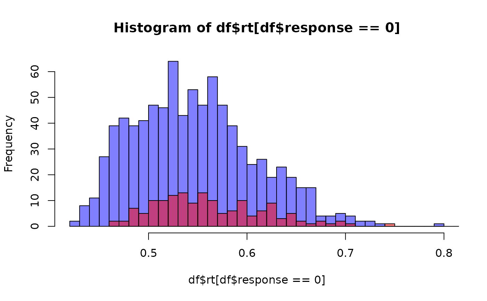

Simulates random draws (reaction times and choices) from a two-choice Linear Ballistic Accumulator (LBA) model.
This version uses a parameterization where the second accumulator's parameters are defined relative to the first.
The LBA model assumes that evidence for each choice option accumulates linearly and independently
until one accumulator reaches a threshold. The start point of accumulation is variable, drawn
from a uniform distribution [0, A]. Drift rates are also variable, drawn from a normal distribution.
Usage
rlba(
n,
vzero = 3,
vdelta = 0,
sigmazero = 1,
sigmadelta = 0,
A = 0.5,
k = 0.5,
ndt = 0.3
)
dlba(
x,
response,
vzero = 3,
vdelta = 0,
sigmazero = 1,
sigmadelta = 0,
A = 0.5,
k = 0.5,
ndt = 0.3,
log = FALSE
)
lba_lpdf_expose()
lba_stanvars()
lba(
link_mu = "identity",
link_vdelta = "identity",
link_sigmazero = "softplus",
link_sigmadelta = "identity",
link_A = "softplus",
link_k = "softplus",
link_tau = "logit",
link_minrt = "identity"
)
log_lik_lba(i, prep)
posterior_predict_lba(i, prep, ...)
posterior_epred_lba(prep)Arguments
- n
Number of simulated trials. Must be a positive integer.
- vzero
Mean drift rate for the first accumulator (accumulator 0). Range: (-Inf, Inf).
- vdelta
Additive deviation for the mean drift rate of accumulator 1 (
v1 = vzero + vdelta). Range: (-Inf, Inf).- sigmazero
Standard deviation of the drift rate for the first accumulator (accumulator 0). Must be positive. Range: (0, Inf).
- sigmadelta
Log-deviation for the standard deviation of accumulator 1 (
sigma1 = sigmazero * exp(sigmadelta)). Range: (-Inf, Inf).- A
Maximum start point for the uniform distribution of starting evidence
[0, A]. Must be positive. Range: (0, Inf). Default: 0.8.- k
Difference between the decision threshold
band the maximum start pointA(i.e.,b = A + k). Must be positive. Range: (0, Inf). Default: 0.2.- ndt
Non-decision time (shift parameter). Represents time for processes like encoding and motor response. Must be non-negative. Range: [0, Inf). Default: 0.3.
- x
The observed reaction time (RT). Must be greater than
ndt.- response
The decision indicator (0 or 1). 0 for choice 0, 1 for choice 1.
- log
Logical; if TRUE, returns the log-density. Default: FALSE.
- link_mu, link_vdelta, link_sigmazero, link_sigmadelta, link_A, link_k, link_tau, link_minrt
Link function for the parameters.
- i, prep
For brms' functions to run: index of the observation and a
brmspreparation object.- ...
Additional arguments.
Value
A data frame with n rows and columns:
rt: Simulated reaction time.response: The index (0 or 1) of the winning accumulator/choice.
Details
The LBA model assumes that evidence for each choice option accumulates linearly and independently
until one accumulator reaches a threshold. The start point of accumulation is variable, drawn
from a uniform distribution [0, A]. Drift rates are also variable, drawn from a normal distribution.
The simulation follows the standard LBA process:
For each trial:
Sample drift rates
rate_0fromNormal(vzero, sigmazero)andrate_1fromNormal(vzero + vdelta, sigmazero * exp(sigmadelta)).Sample start points
start_0andstart_1fromUniform(0, A).
Resample drift rates for a trial if both sampled rates are non-positive (<= 0).
Calculate the time
dt_ifor each accumulator to reach the thresholdb = A + k:dt_i = (b - start_i) / rate_i. Ifrate_i <= 0,dt_iis effectively infinity.The accumulator with the minimum positive
dt_idetermines the choice (response) and the decision time (min(dt_i)).The final reaction time is
rt = min(dt_i) + ndt.
Psychological Interpretation:
Drift Rate (
vzero,vdelta): Reflects the rate at which evidence accumulates for each choice. Higher drift rates indicate faster evidence accumulation and a higher likelihood of selecting the corresponding choice. Differences in drift rates between accumulators (viavdelta) can represent differences in preference, difficulty, or bias between the two options.Drift Rate Variability (
sigmazero,sigmadelta): Captures trial-to-trial variability in the evidence accumulation process. Higher variability indicates less consistent evidence accumulation, leading to greater variability in reaction times and choices.Start Point Variability (
A): Represents the range of initial evidence levels for each accumulator. Larger values ofAintroduce more variability in reaction times, as the starting point can vary more widely between trials.Threshold (
b = A + k): Represents the amount of evidence required to make a decision. Higher thresholds lead to longer reaction times but more accurate decisions, as more evidence is required before a choice is made.Non-Decision Time (
ndt): Accounts for processes unrelated to evidence accumulation, such as sensory encoding and motor response. This parameter shifts all reaction times by a constant amount.
Special Cases:
When
vdelta = 0andsigmadelta = 0, the two accumulators are symmetric, meaning both choices are equally likely (assuming no bias in the start points or thresholds).When
Ais small relative tok, the model behaves more deterministically, as the start point variability has less influence on reaction times.When
sigmazeroorsigmadeltaare large, the model produces more variable reaction times and less predictable choices.
References
Brown, S. D., & Heathcote, A. (2008). The simplest complete model of choice response time: Linear ballistic accumulation. Cognitive Psychology, 57(3), 153-178. doi:10.1016/j.cogpsych.2007.12.002
Examples
df <- rlba(n = 1000, vzero = 3, vdelta = -0.5,
sigmazero = 0.5, sigmadelta = 0,
A = 0.5, k = 0.5, ndt = 0.3)
hist(df$rt[df$response == 0], breaks = 50, col = rgb(0,0,1,0.5))
hist(df$rt[df$response == 1], breaks = 50, col = rgb(1,0,0,0.5), add = TRUE)

# You can expose the lpdf function as follows:
# lba_lpdf <- lba_lpdf_expose()
# lba_lpdf(...)